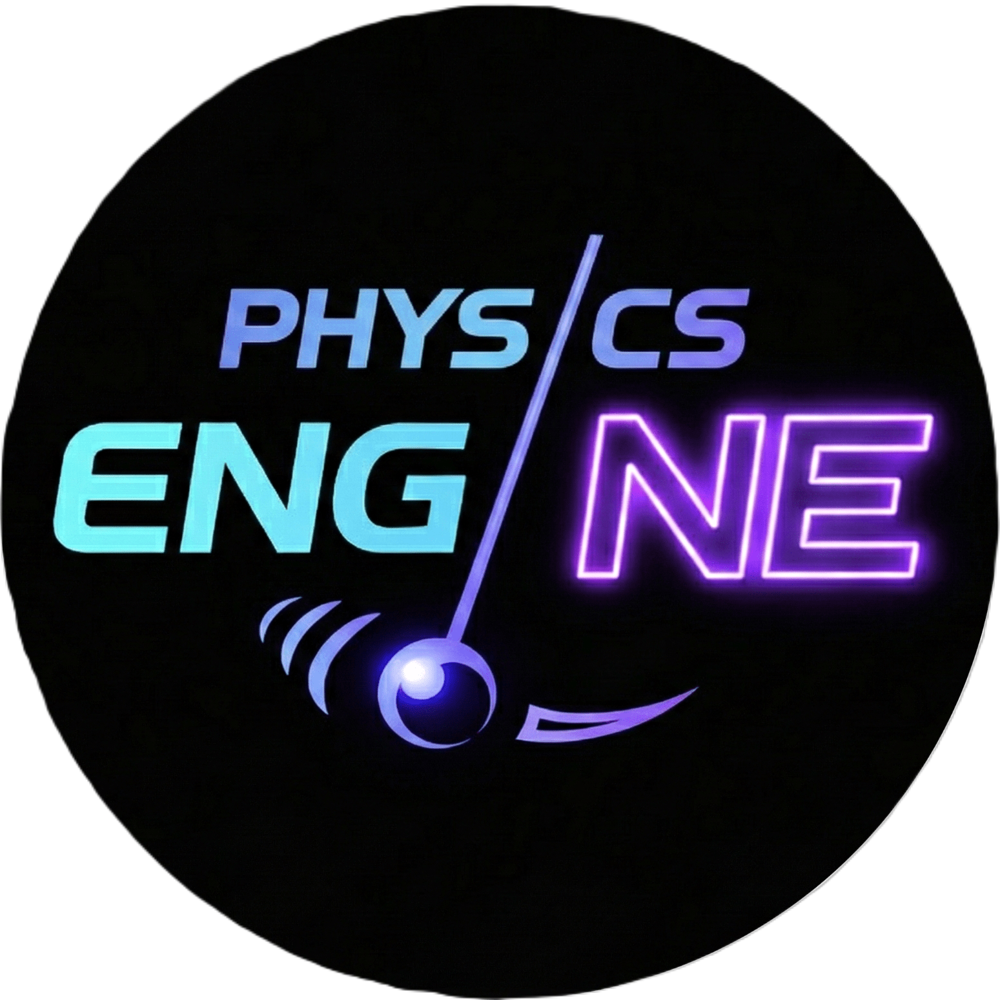

අර්ධ සන්නායක
SYS-01අර්ධ සන්නායකවල මූලික ගුණාංග, ඉලෙක්ට්රෝන හා කුහරවල හැසිරීම සහ මාත්රණය (doping) පිළිබඳ අන්තර්ක්රියාකාරී අනුකරණයකි.
Initialize
අර්ධ සන්නායකවල මූලික ගුණාංග, ඉලෙක්ට්රෝන හා කුහරවල හැසිරීම සහ මාත්රණය (doping) පිළිබඳ අන්තර්ක්රියාකාරී අනුකරණයකි.
Initializep-n සන්ධියක පෙර නැඹුරුව (forward bias) සහ පසු නැඹුරුව (reverse bias) යටතේ ක්රියාකාරීත්වය සහ හායන කලාපයේ හැසිරීම අධ්යයනය කරන්න.
Initializeඅර්ධ තරංග සහ පූර්ණ තරංග සෘජුකරණ (rectification) ක්රියාවලිය සහ ධාරිත්රක භාවිතයෙන් තරංග සුමටනය කිරීම නිරූපණය කරයි.
Initializeසෙනර් දියෝඩයක බිඳවැටීමේ (breakdown) ලාක්ෂණික සහ එය වෝල්ටීයතා නියාමකයක් ලෙස ක්රියා කරන ආකාරය පිළිබඳ අනුකරණයකි.
Initialize741 කාරක ඇම්ප්ලිෆයරයේ (Op-Amp) භෞතික ගුණාංග සහ පින් සැකසුම (Pinout) පිළිබඳ අනුකරණයකි.
Initializeකාරක ඇම්ප්ලිෆයරයක් සංසන්දකයක් (Comparator) ලෙස ක්රියා කරන ආකාරය සහ ප්රායෝගික සංකල්ප විශ්ලේෂණය කරන්න.
Initializeකාරක ඇම්ප්ලිෆයර් පරිපථ වල විවිධ වින්යාස (Configurations) සහ වර්ධකයක් (Amplifier) ලෙස එහි භාවිතය නිරූපණය කරයි.
InitializeAND, OR, XOR සහ NOT ද්වාර වල ආදාන-ප්රතිදාන හැසිරීම සහ සත්යතා වගු අන්තර්ක්රියාකාරීව අධ්යයනය කරන්න.
Initialize